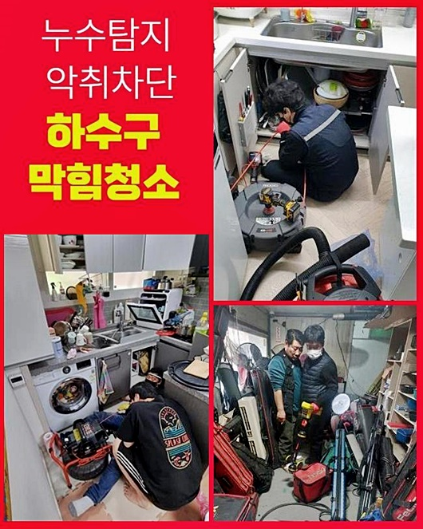
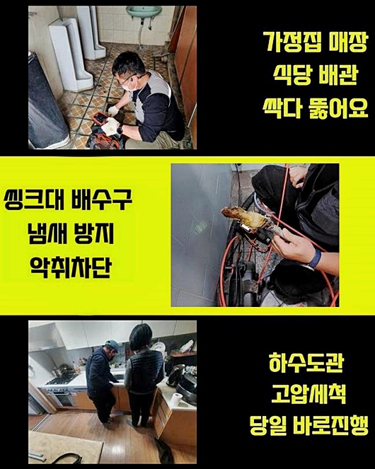
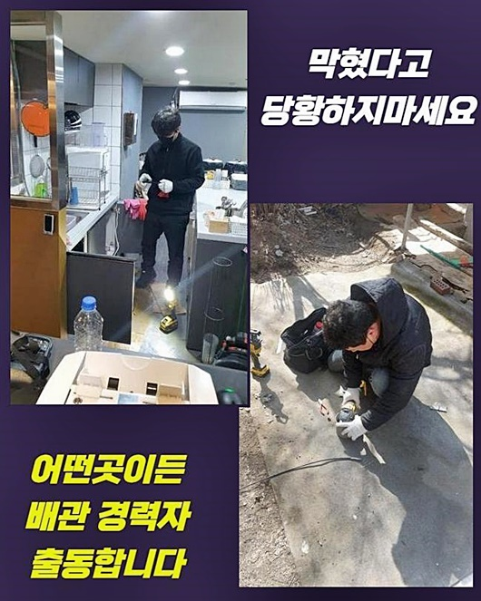
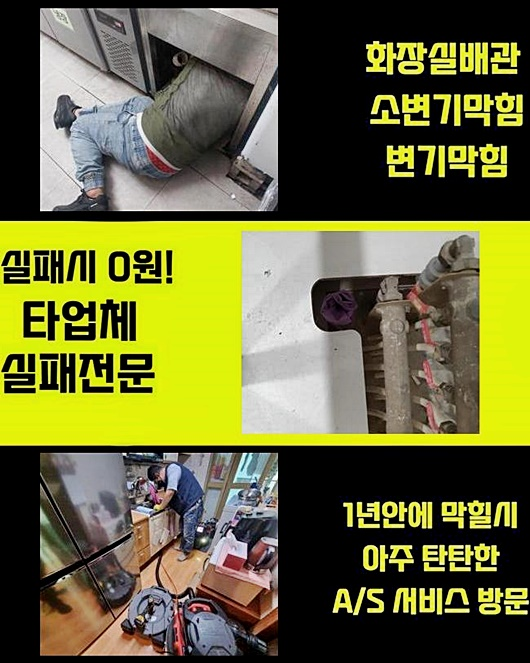
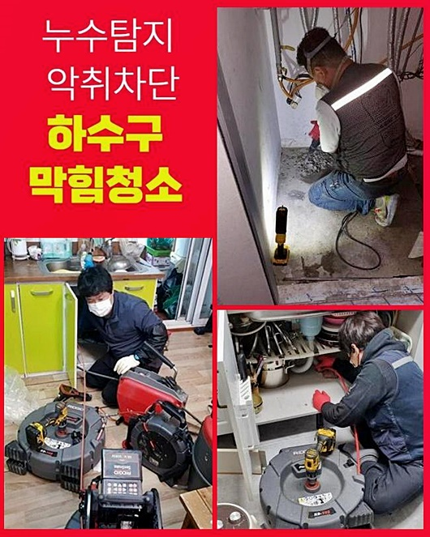
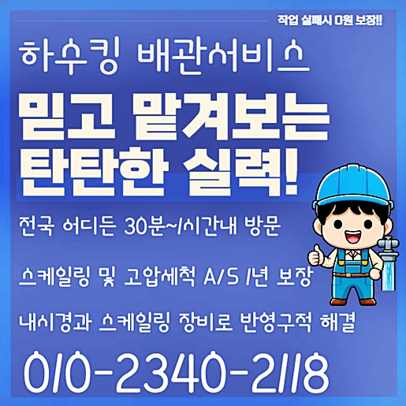

🏠 남양주 삼패동욕실뚫음 퇴계원읍 횡주관청소 배관설비공사
양주 남양 하수구막힘 전문 시공 후기

📋 작업 개요
- 위치: 양주 남양, 남양, 양주
- 서비스 유형: 하수구막힘, 배관막힘, 역류해결, 뚫는업체, 배관청소, 고압세척, 설비공사
- 작업 일시: 2024. 7. 18. 18:19
- 업체명: 하수구수사대 (010-5615-2118)
🔍 문제 상황
남양주 삼패동욕실뚫음 퇴계원읍 횡주관청소 배관설비공사
건축물들은 건설 시 배관들을 순차적으로 설치하기에 생활의 부분에서 편리함을 영위하도록 해주죠
반대로 오래될수록 하수도는 낡아서 2차적인 문제까지 일으키게 만들죠
오래전에 세워진 건축물에서 배관 관련 문제들이 야기된 장면을 목격했는데요
이와같이 막힘관련 문제들이 얼마만큼 악영향을 자아내는지 일러주는 시간인데요
이런 문제들은 전문진의 높은 역량이 필요하기에 조속히 전문업체와 컨택해 증상을 완화시키도록 의뢰를 고려하는게 합리적이겠습니다
노후화가 진행되었을 시 내측에 잔해가 누적되어서 배수를 막아섭니다
하물며 하수관로에서 흘러가면서 기름때같은거나 머리카락덩어리와 같은 잔해물이 더불어 배관 내부로 모이게되는데요
슬러지형태의 오염물은 벽면에서 고착되어 큰 부피를 형성시켜 배수장애를 일으킵니다
그러므로 하수관련 시설의 노후과정을 예방할 목적이라면 간헐적으로라도 점검들이 요구되죠 더나아가 이물이 쌓이지않게 관리해주셔야합니다
금액들을 투자해서 배수관을 안전하게 유지하는게 생활에 있어서 편리를 구축하는데에 필요한 절차로 자리잡고 있습니다
그러나 잔해물이 누적된 증상들을 방임할 땐 2차 피해가 생겨날 여지가 충분해 잔해들을 제거시키고 구석구석 진단하는것이 중요하겠습니다

🔎 원인 분석
💡 전문가 진단: 정밀 진단 장비를 사용하여 슬러지의 고착 여부를 판명하고 타격/세척 작업을 실시했습니다.
석션장치를 사용해서 이물을 청소한 다음 청소를 해주는것은 해결에 도움들이 되요
이토록 주기적인 관리해주는 과정을 통한다면 배관 관련 문제들을 방어할 수 있는데요
잔해물들이 퇴적되어버린 하수관과 잔해의 흐름을 파악해서 증세의 근간이 되는 이유들을 알아야되겠습니다
이러한 내용을 초고로해서 절차에 맞게 수리내용을 세운 뒤 진행한다면 제대로된 세척결과물을 얻게될거에요
주변에 있는 배관 관련 제품들을 쓰는건 단발성으로 증세를 해결하지만 완전한 대처가 되기엔 무리가따르죠
전문인의 실력으로 정확하며 신속한 처리를 행하면 하수구막힘 증세를 완벽히 수리합니다
노하우들과 경험들을 응용하여 작업들을 이어나가면 최고의 결과들을 보실 수 있으십니다
되도록이면 전문업체들의 도움들로 위험부담없는 세척들을 이어나가는게 중요하죠
그래서 그 징조들이 목격되면 곧바로 전문인과 의뢰한 후 해결하는데에 집중해야하죠
배관으로 빠지는 유속이 저하되었거나 역류문제들이 발생되는등 추가적인 피해들이 발발하는 시점에 더욱 중요한데요
해결이 수행되지 못하면 설치된 관로에서 균열들이 발생될 확률이 있고 2차적 피해들로 번질 수 있겠습니다
일반의 경우에 잔해가 축적된 배관은 석션기 내시경기계 스케일링 장비들을 이용해요

🔧 작업 과정
이물들을 청소하고자 밀어내고 석션을 해주거나 고압 세척을 이어간다면 꼼꼼히 배수로를 고쳐내요
세척을 해줄때 잔해물을 천천히 없애주고 적합한 장비를 사용해 하수도를 청결히 관리해요
무턱대고 수리를 이행하는것은 증상을 수렁으로 빠트릴 수 있어요 내시경장치는 깊어서 확인하기에 쉽지않은 지점까지 체크해볼 수 있어 유용하게 쓰이죠
잔해물들의 위치들을 파악해서 대응책들을 수행해요
워터젯 고압세척을 행하면 이물질들을 적재적소 제거시킵니다
전문인의 손길을 빌려 알맞게 이물제거를 수행하는것이 중요하겠습니다
다각적인 접근 방식을 이어간다면 하수구막힘 증상을 제대로 시정해드립니다
자가적으로 해결하기보단 전문업체의 해결방법을 따라 수습법을 세우시는것이 알맞은 방향이겠습니다
배관이 막히게되면 배수 속력이 떨어지고 물들이 역으로 치솟는 증세가 발발하기때문에 외부로 배수되는 속도들이 둔화되는 사태가 벌어지죠
그러면서 배관에서는 압력이 늘었다 줄었다 하는것이 반복되며 노후가 야기되므로 예상치못한 복합적인 증상들을 배제할 수가 없어요
때문에 작업시간을 열어두는것이 중요하죠
방문드렸던 장소에선 욕실안에서 악취들이 코를 찔렀고 배관 컨디션이 이루 말할 수 없었죠
레버들을 누르고 물이 솟구치는 광경을 관찰해보고자 했어요
하수가 안내려간다거나 지속적으로 거꾸로 솟진않는건지 세심히 체크했습니다
이처럼 함으로써 전문가의 경우 문제 원인들을 인지해 수리에 문제요소를 최소화합니다
이물들을 청소해준후 접착부로 연결된 곳을 깨끗히 떼어내어 내측을 알아보았죠
내시경카메라로 배수관에 문제가 있는 지점을 확인해주고 어째서 배출되지 못하는건지 이유들을 찾아내기 위해 한시도 눈을 떼지 않았는데요
의뢰자에게 작업 결과를 보여드린 뒤 안내하고 완료를 말씀드렸죠
어째서 막히게되는 사태가 발생된건지 파악한 뒤 이유들을 없애주고, 최고의 해결에 관한 대처를 찾아내는것에 혈안이 되어있었죠


✅ 작업 완료
그래서 고객의 고민을 해소시켜드리고 안정적인 고객만족을 실현시키기위해 최선의 방식만을 추구합니다
저희전문진이 문제의 공간에 내방하기에 앞서서 다른데서 다녀갔으나 막히는 게 개선되지 않은 탓에 결국 저희전문가들을 불러주셨어요
의뢰자분은 저희들의 고객만족서비스에 칭찬들을 아끼지 않았고 뚫어내지 못하면 수리비를 받는 일이 없으며 as들을 제공해주는게 끌렸다고 하셔쓴데요
다양한 작업방식을 갖추어 고민들을 줄여나가 고객분의 편의를 지켜드리기위해서 노력합니다
시간에 상관없이 언제라도 연락하신다면 재빠르게 달려갈게요!




⚠️ 하수구 배관 막힘 예방 및 관리 가이드
- ✅ 머리카락, 비닐, 물티슈 등 물에 분해되지 않는 이물질은 하수구 유입을 절대 금지해 주세요.
- ✅ 하수구 거름망을 씌우고 모여진 이물질은 주기적으로 쓰레기통에 바로 비워주셔야 합니다.
- ✅ 배관 노후가 심할 경우 이물질이 더 쉽게 걸리므로 주기적인 배관 세척(고압세척 등)을 권장합니다.
- ✅ 작업 후 1년 이내 재발 시 하수구수사대에서 무상 A/S 보증 서비스를 제공합니다.
💡 핵심 정리
- 확실한 장비 작업(내시경 점검 및 샤프트 스케일링)으로 원인을 뿌리 뽑습니다.
- 작업 후 1년 이내에 동일한 부위 재발 시 100% 무상 A/S 서비스를 보장합니다.
- 서울 · 경기 · 인천 전 지역에 24시간 언제든 긴급 출동할 수 있도록 항시 대기 중입니다.
❓ 자주 묻는 질문 (FAQ)
🚨 양주 남양 하수구막힘 문제로 고민이신가요?
정확한 원인 진단과 확실한 시공으로 재발 없는 해결을 약속드립니다.
24시간 긴급 출동 | 서울 · 경기 · 인천 전지역 | 1년 내 재발 시 무상 A/S